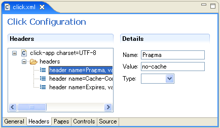
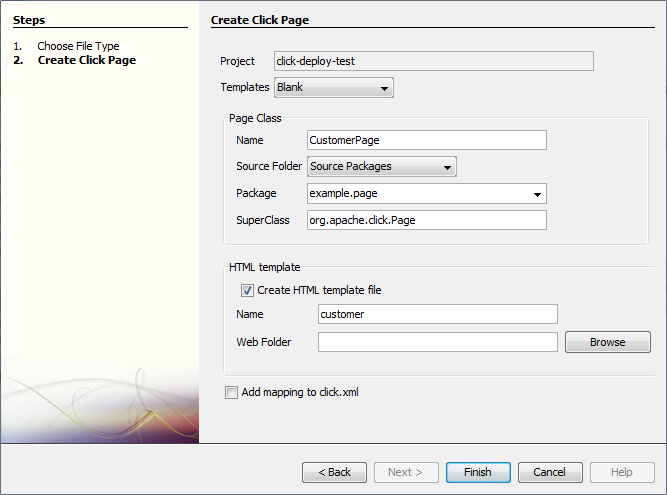
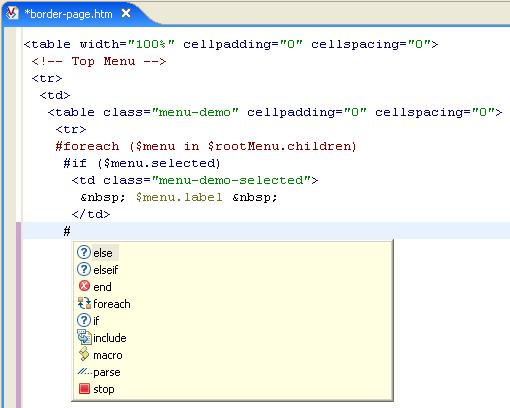

-
1. How to get help?
-
OK you have read the documentation and reviewed the
Examples applications, but there is still something
you still don't understand. What do you do?
You go to the click-user or click-development mail
news groups.
This is where you get support from in open source projects. Its free, friendly
and usually pretty responsive.
These news groups are where other people ask questions, and where users
and developers discuss ideas. Its highly recommended, so don't be shy.
To sign up to these mail groups follow the instructions at the following links:
-
2. What about Commercial Support?
-
If you want commercial support or training for Click, you can obtain this
from
Avoka Technologies.
For more details please email Malcolm Edgar.
-
3. What development tools are there?
-
Recommended Click development tools include:
-
ClickIDE
ClickIDE is an Eclipse Web Tools Project (WTP)
plugin.
To use the ClickIDE plugin, create a "Dynamic Web Project" and select the
"Click" Project Faclet.

-
Netbeans Plug-in
NetBeans plug-in for Click is under development by
Hantsy Bai.

-
Velocitywebedit
Velocitywebedit is a Velocity and HTML Editor plugin for Eclipse.

After installing Velocity Web Edit configure Eclipse *.htm file associations
to use Velocity Editor. Do this via the Eclipse menus:
Window > Preferences > General > File Associations
-
Veloeclipse -
Velocity and HTML Editor plugin for Eclipse
-
Veloedit -
Velocity and HTML Editor plugin for Eclipse
-
4. How can the GUI designer define the HTML if Click Controls generates everything?
-
In Click there is nothing preventing you from laying out HTML forms by hand.
It just provides the option of doing it automatically for you.
There are a number of approaches you can use for generating for HTML,
each with pros & cons:
-
Use Click forms and controls to do all the HTML rendering for you.
This a 80/20 approach where you can quickly get stuff developed, but it may
not meet all your UI style requirements.
Please note the Forms control provides many
auto layout
options, see the click-examples 'Form Properties'
for a demonstration.
The Form control also renders the class attributes 'form', 'fields', 'errors' and 'buttons'
in the form's HTML elements enabling fine grained CSS control.
As an example you could configure a form to display the labels on top, and want to
increase the vertical spacing between fields. To do this simply define the CSS
style in front of your form:
<style type="text/css">
td.fields { padding-top: 0.75em; }
</style>
$form
Fields are also rendered with an 'id' attribute enabling manipulation of individual fields.
-
Subclass Click Form/Controls to customise HTML rendering.
This is a good approach for ensuring a common LAF across your web application,
but you will have to get your hands dirty and write some code.
-
Use Panel class to create reusable HTML blocks.
The
Panel
control support custom Velocity templates, which is an ideal way
to create reusable HTML sections which you can include in many pages.
Panels also support nested controls, enabling your sections to support
control based behaviour.
-
Use Velocity macros for a generic HTML layout.
This is easy to do and gives you good reuse across your web application.
Please see the Form
velocity macros
example, and also see the click-examples 'Velocity Macro'
demonstration.
-
Layout your HTML forms by hand.
This gives you the ultimate control in presentation, but provides no reuse
across your web application.
Please see the Form
manual layout
example.
-
5. How can I customize a control's look and feel (Stylesheet, JavaScript and other resources)?
-
See the section auto deployed files
for details on how to customize and override a control's resources.
-
6. How can I have many Pages using the same HTML template?
-
To do this use the Page templating technique detailed in the
Page Templating topic.
Page templating is highly recommended for your web applications, as it provides
numerous benefits including:
- greatly reduces the amount of HTML you need to maintain
- ensures you have a common look and feel across you application
- makes your application more robust, as there is less code to test
For a live demonstration of page templating deploy and run the
click-examples application.
-
7. Why do control listeners methods have to return a boolean value?
-
Control listener methods have to return a boolean value to state whether the
Pages controls and methods should continue to be processed. To continue
processing listener methods should return true, to abort they should return false.
The reason you may want to abort further processing is so you can navigate
directly to another page, rather than continuing to execute other control or
page methods which may be time consuming. You can use this feature like a break
or goto statement. For example:
public boolean onLogoutClick() {
setRedirect(Logout.class);
return false;
}
Please see the Page Navigation topic
for more details.
-
8. Can you exclude some fields from a Form?
-
To exclude some fields from being displayed in a shared Form class use the
Form.removeFields()
method.
You can even do this in your page template. Just make sure you call you call
it before $form renders itself. For example:
$form.removeFields(["field11", "field15", "field22"])
$form
-
9. How do you internationalize Pages and Controls?
-
Click provides good support for application localization and
internationalization (I18N) requirements.
Page Messages
The Page class supports page specific string localisation bundles using the
method
getMessage(String).
For example a Login class with three locale string property files on the classpath:
/com/mycorp/pages/Login.properties
/com/mycorp/pages/Login_en.properties
/com/mycorp/pages/Login_fr.properties
In your Login Page class you can use the getMessage() method
to lookup request localized message strings.
public void onInit() {
addModel("title", getMessage("title"));
}
In your HTML page template you can also access the localize message using
the MessagesMap
object which is added to the template using the name "messages". For example:
<h2>$messages.title</h2>
You can also define Field and AbstractLink label and title values in your pages
properties file using control name lookup convention. For details please see
the Javadoc:
Control Messages
The Control classes share a common messages properties file:
/click-control.properties
The AbstractControl class provides a number of
getMessage(String)
methods which support localized strings and message formatting.
Please also see the Control topic Message Properties.
-
10. How do you encode Pages in the UTF-8 character set?
-
To encode pages in the UTF-8 character set you need to create a
WEB-INF/velocity.properties file with the properties:
input.encoding=UTF-8
This will configure the Velocity runtime to use UTF-8.
You will also need to set the page headers content type to UTF-8. You can do this globally for all
your applications pages using the headers element in your
WEB-INF/click.xml file:
<click>
..
<headers>
<header name="Content-Type" value="text/html;charset=UTF-8"/>
</headers>
..
</click>
This will set the pages HttpServletResponse "Content-Type" header to be
"text/html;charset=UTF-8". Alternatively you can override the Page
getContentType() method
to this content type.
-
11. How do you specify the character set which is used in your application?
-
You can specify your application character set in WEB-INF/click.xml:
<click charset="UTF-8">
..
</click>
This character set is used for Velocity input encoding, and response Content-Type.
So if you specify the character set in WEB-INF/click.xml,
you don't have to create WEB-INF/velocity.properties.
If you want to use the other character set in your Velocity templates,
you can override input encoding by WEB-INF/velocity.properties.
See the previous topic.
-
12. How can you prevent multiple form posts?
-
You can prevent multiple form posts by using the Post Redirect pattern. With
this pattern once the user has posted a form you redirect to another page.
If the user then presses the refresh button, they will be making a GET request
on the current page.
public class Purchase extends Page {
..
public boolean onPurchase() {
if (form.isValid()) {
Order order = new Order();
form.copyTo(order);
getOrderService().save(order);
// Perform a redirect after post to protect against users pressing
// the refresh or back button
setRedirect(Purchase.class);
return false;
}
return true;
}
}
Please see the Redirect After Post
article for more information on this topic.
Another common way duplicate posts occur is if the user accidentally
click the Form's submit button twice, in quick succession. Redirecting to another
won't protect against the second accidental submit.
Click provides a clean way to prevent users from resubmitting the same Form
through the Form's
onSubmitCheck()
method:
public class Purchase extends Page {
..
public boolean onSecurityCheck() {
// Placing the onSubmitCheck in the onSecurityCheck event, prevents the
// page from being processed if a Form is resubmitted a second time
return form.onSubmitCheck(this, "/invalid-submit.html");
}
}
Please see the Click Examples 'Page Flow' for a demonstration of the
Post-Redirect and submit check patterns.
-
13. How can I use *.html Click pages?
-
Click does not automatically map *.html files as Click pages. These files
are not processed by the ClickServlet and are intended for use as static content.
However see the FAQ on alternative extensions.
-
14. Can Click be mapped to an extension other than *.htm?
-
By default Click supports *.htm and *.jsp extensions.
However you can map templates with different extensions, for example *.xml, by
subclassing XmlConfigService and specify extra mappings by overriding
isTemplate(String path). You can read more details
here.
You can also map URLs to different extensions using
Url Rewrite Filter. It is even
possible to rewrite to REST like URLs:
- rewrite URL from http://www.mycorp.com/book.htm?id=324 to http://www.mycorp.com/book/324 (which will retrieve the book where id=324)
- rewrite URL from http://www.mycorp.com/books.htm to http://www.mycorp.com/books (which will retrieve the list of books)
-
15. What JARs should I use with Click and Cayenne?
-
To get Click and Cayenne to work happily with each other you will need to
include the following JAR files in your WEB-INF/lib directory:
- ashwood-2.0.jar
- cayenne-server-3x.jar
- click-2x.jar
- click-extras-2x.jar
- commons-collections-3.1.jar
- commons-logging-1.1.jar
-
16. How can you integrate Click into Spring?
-
To integrate Spring with Click configure the
SpringClickServlet
instead of the normal ClickServlet. The SpringClickServlet is contained in the
Extras library and provides excellent integration options.
The Spring MVC Framework however, is not compatible with Click. The Spring framework
uses a low level command pattern design like Struts and WebWork.
Spring uses a DispatcherServlet to route requests to Controller
objects and then passes the ModelAndView results to the rendering layer.
public interface Controller {
public ModelAndView handleRequest(HttpServletRequest request,
HttpServletResponse response) throws Exception;
}
In Spring MVC the integration plugin points are the Controllers.
Click uses higher level design constructs focusing on Pages and Controls. Click uses its
own ClickServlet for dispatching requests to Pages and Controls,
which are Click's plugin points.
-
17. Does Click support JSP?
-
Click fully supports JSP pages.
JSP Pages can be automatically loaded, like Velocity templates, or
can be explicitly defined in the click.xml file.
<pages package="com.mycorp.pages"/>
<page path="customers-table.jsp" class="CustomersTable"/>
</pages>
The page's model data values are automatically added to the request as
attributes so they are available in the JSP. Other Click values added
as request attributes include:
- context -
the Servlet context path, e.g. /mycorp
- format -
the Format
object for formatting the display of objects
- forward -
the page JSP resource (.jsp file)
- messages -
the MessagesMap adaptor
for the Page getMessage()
method
- path - the mapped request path
of the page. Note this will have a .htm not a .jsp extension
-
18. How can I render PDF and Excel documents?
-
By making use of the Direct Rendering
support you can render directly to the servlet response and bypass the page
template rendering.
In order to bypass the Page template rendering you must set
the Page path to null. If Click does not know the location of the
Page template, it won't render it. If you do not set the Page path to null,
Click will attempt to render the Page template which can lead to undesirable results.
Here is an example to render either a PDF or Excel document:
public MyPage extends Page {
/** The PDF report type request parameter. */
public static final String PDF = "pdf";
/** The Excel report type request parameter. */
public static final String EXCEL = "excel";
/**
* The Page#onGet renders the report to the servlet output stream.
*/
public void onGet() {
HttpServletResponse response = getContext().getResponse();
// report type is a request parameter which specifies either PDF or Excel
String reportType = getContext().getRequestParameter("reportType");
// Retrieve either a PDF or Excel document as an InputStream
InputStream inputStream = getInputStream(reportType);
// Set response headers
String mimeType = getMimeType(reportType);
response.setHeader("Content-Disposition", "attachment; filename=\"report.pdf\"");
response.setContentType(mimeType);
response.setHeader("Pragma", "no-cache");
OutputStream outputStream = null;
try {
outputStream = response.getOutputStream();
// Write out PDF Document to response stream
IOUtils.copy(inputStream, outputStream);
// By setting the Page path to null, we bypass template rendering
setPath(null);
} catch (IOException ioe) {
throw new RuntimeException(ioe);
} finally {
ClickUtils.close(outputStream);
}
}
/**
* This method should contain the logic to retrieve the report as either a PDF
* or Excel document.
*/
public InputStream getReport(String reportType) {
InputStream inputStream = null;
if (PDF.equals(reportType)) {
...
} else if (EXCEL.equals(reportType)) {
...
}
return inputStream;
}
/**
* This method returns the report mime type based on the specified report type.
*/
public String getMimeType(String reportType) {
if (PDF.equals(reportType)) {
return ClickUtils.getMimeType(".pdf");
} else if (EXCEL.equals(reportType)) {
return ClickUtils.getMimeType(".xls");
}
}
}
-
19. What is the performance of Click?
-
Click is fast.
When the Click framework processes a request it creates a relatively small
number of objects. These include a Page, a Context, a Format and a number of
Controls which in turn contain some Lists, Maps and Strings.
The allocation of small/moderate numbers of short lived objects by
modern JVMs is very, very fast. Please see the IBM article
Urban performance legends, revisited.
The amount of actual work Click does is pretty small.
The onProcess() methods traverse a list of Controls and do simple
operations.
The Control toString() methods can allocate large StringBuffers when
rendering tables, but forms rarely get larger than 4,000 characters.
When Click creates a new StringBuffer it attempts to determine the
maximum likely size to avoid additional memory allocation and arraycopy
operations.
There is not much reflection in Click at all. With reflection only really used by
the Control call back listeners:
okButton.setListener(this, "onOkClicked");
The next step in processing the request is rendering the response.
Velocity is largely responsible for this step.
Velocity is also fast.
While hard performance numbers are difficult to come by in this area,
until recently Velocity was considered to be faster than JSP.
However, recent discussions on Velocity mail lists indicate that JSP
compilers have improved to the point where JSP has a small performance lead over
Velocity. What ever the case, JSP is very fast and so is Velocity.
-
20. How do I unit test Click pages?
-
It is generally recommended that you don't write JUnit style automated unit
tests for Click pages as the cost to benefit ratio is quite poor.
If you have complex business logic in an Click page you should refactor this
code into a business level service class which you can readily unit test and
reuse in multiple places.
If you still need to write unit tests for your Click pages, please read the
documentation on the
MockContainer and
MockContext classes.
-
21. How do I deploy Click resources in restricted environments?
-
Often times one need to run Click applications in restricted environments.
Examples include:
- WAR/EAR is not unpacked - common with WebLogic and Websphere servers
- File system permissions are restricted
- Hosting applications on Google App Engine
Click works perfectly fine in these environments. The only issue one might
encounter is Click's auto-deploy feature where static resources are copied
to the webapp root directory at application startup. In restricted environments
it might not be possible for Click to deploy its resources.
Please see the user-guide section, Deploying resources in a restricted environment,
for various solutions.
-
22. Why doesn't Click use Commons Logging / Log4J for logging?
-
Click by default does not use Commons Logging / Log4J to avoid the class
loader and configuration issues which often occur with these framework, and
instead default to System.out using the ConsoleLogger.
Click provides support for configurable LogServices and provides
JdkLogService and Log4JLogService classes in Click Extras.
-
23. Why doesn't Click use FreeMarker instead of Velocity as the default template engine?
-
FreeMarker is a powerful templating engine which was evaluated along side
Velocity for use in Click. While FreeMarker has many sophisticated
features Velocity lacks, Velocity was chosen as the default engine because
it is easier to learn and doesn't use an XML style markup syntax.
Please note however that Click provides support for FreeMarker with the
FreemarkerTemplateService in Click Extras.
-
24. Why develop a new Web Application Framework?
-
Because the existing frameworks did not meet my needs. Struts doesn't really do much,
while Tapestry is too complicated.
For a more comprehensive answer please see Why Click.